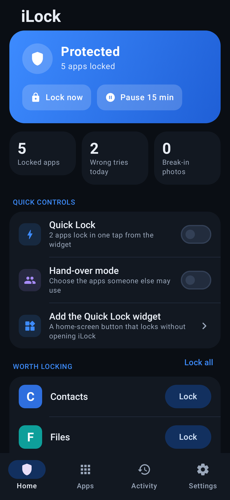
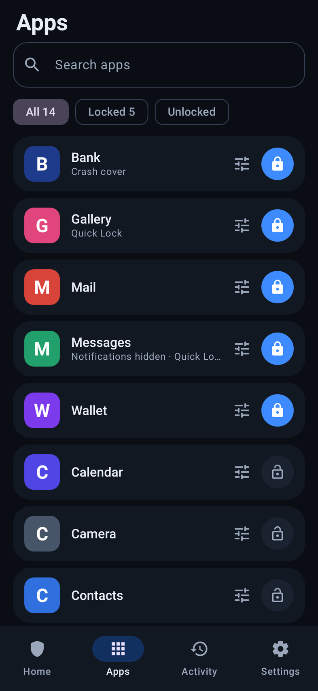
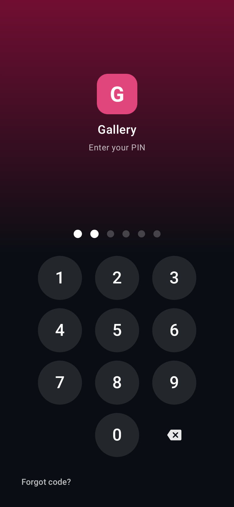
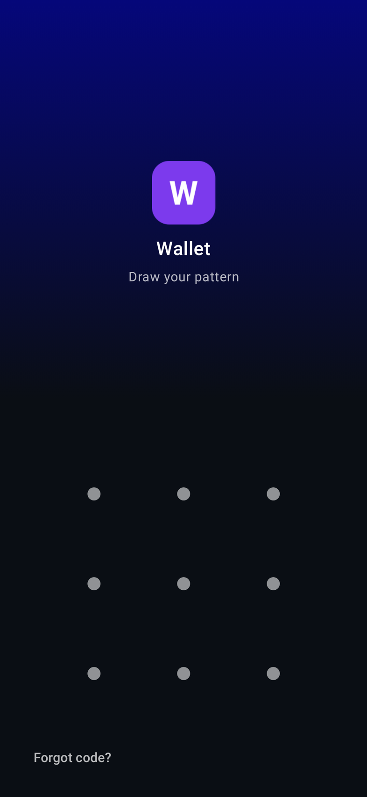
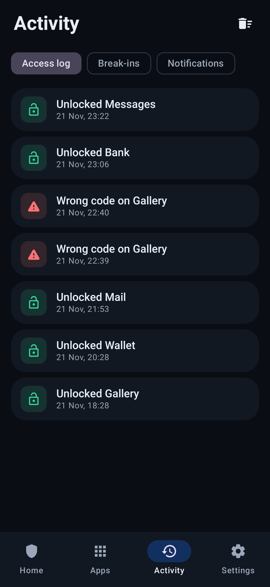
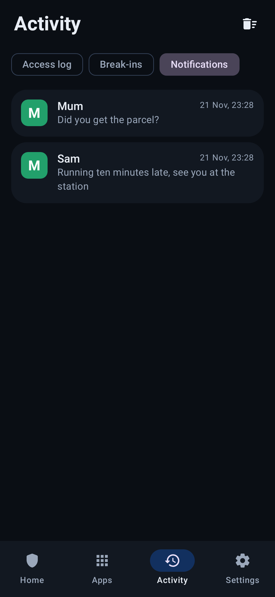
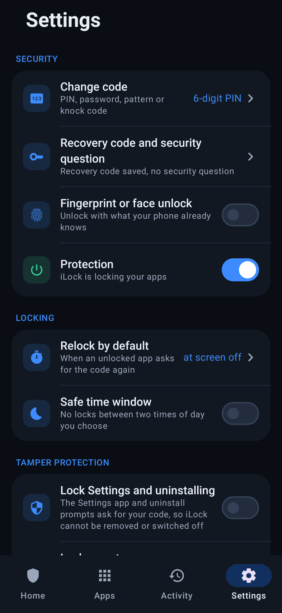
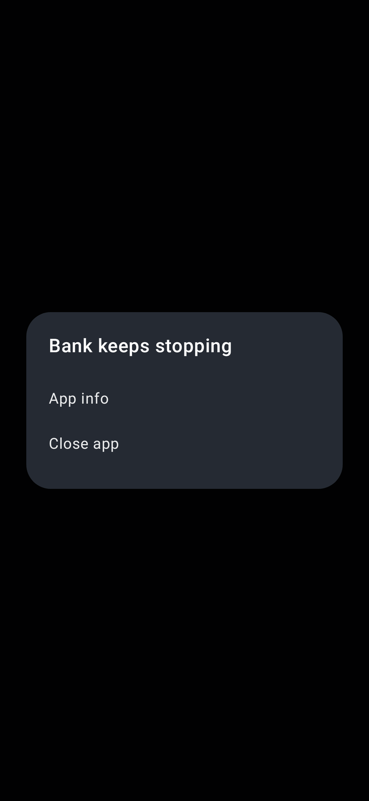

Your apps, behind your own lock.
Hand your phone to someone and they can open anything on it. iLock is an Android app that puts a PIN, a pattern or your fingerprint in front of the apps you choose, such as your messages, your photos and your banking.
It is free, with no adverts and nothing to unlock. And it cannot go online: iLock has no internet permission, so your code, your logs and your photos stay on your phone.
Download for AndroidHow to install
- Version 1.0.2
- Android 11 or later
- 3.6 MB
Free, with nothing to unlock. No adverts, no account with the developer, no tracking. Compare or read the release notes.
Chrome may say the file might be harmful. It shows this for app files that do not come from Google Play. Choose Download anyway.

- No subscriptionEvery feature is in the free app.
- No advertsNone in the app and none on this site.
- No accountThere is nothing to sign up to.
- No internetIt has no permission to go online.
A look inside
These are the real screens, drawn from the app's own code with made-up apps and a made-up access log. Swipe or scroll sideways to see them all.







How it works
Your phone's screen lock guards the front door. iLock adds a lock to the rooms inside, for the times the phone is already unlocked and in someone else's hand.
Choose a code
Pick a PIN, a password, a pattern or a knock code, and write down the recovery code iLock shows you. Add your fingerprint if you like.
Pick the apps
Tap Lock beside any app. iLock suggests the ones that usually hold private things, and Lock all does them at once.
Carry on as normal
Open a locked app and iLock asks for your code first. Everything else on the phone opens as it always did.
Everything is in, and all of it is free
Nothing below is held back for a paid tier, because there is no paid tier.
Locking
- Six ways to unlock
- A 4-digit PIN, a 6-digit PIN, a PIN of any length, a password, a pattern, or a knock code, with fingerprint or face unlock on top.
- Locks the moment an app opens
- iLock covers a locked app before any of it can be seen, then asks for your code. A back-up route keeps locking if Android switches the main one off.
- A rule for each app
- Lock again on leaving, after one, five or fifteen minutes, or when the screen turns off. Give your bank a stricter rule than your gallery.
- A lock screen that fits
- It takes on the colour of the app behind it, with a scrambled keypad, hidden key presses and a hidden pattern line if you want them.
Everyday
- Quick Lock widget
- One tap on a home-screen button or a quick-settings tile locks the apps you chose, without opening iLock.
- Hand-over mode
- Passing your phone to someone? One switch locks everything except the apps you allow.
- Private notifications
- For a locked app, show that something arrived but hide who and what, or hide it altogether and read it in iLock.
- Pause and safe hours
- A 15-minute pause, and a time window with no locks, such as overnight at home.
Protection
- Wrong tries are logged
- Choose how many wrong tries are allowed, then the waits grow. Every unlock and wrong code is listed with the app and the time.
- Intruder photo
- Optionally photograph whoever keeps getting the code wrong. Photos stay inside iLock on the phone.
- Harder to remove
- Lock Settings, uninstall prompts and the app stores, and ask Android to refuse to uninstall iLock.
- Disguises
- A locked app can pretend to have crashed, with the real lock behind a press and hold. iLock itself can look like a Calculator.
A locker you do not have to trust
It cannot go online
A locker sees every app you open. iLock has no internet permission, so what it sees has nowhere to go.
Your code is never stored
iLock keeps a scrambled, one-way version of your code, in storage that other apps cannot read.
No ads, no tracking
There is no advertising, analytics or tracking in the app or on this site.
Installing and updating
iLock is not on Google Play, so your phone asks a couple of extra questions the first time.
Download the app file
Tap Download on your phone. The file is called iLock.apk and is about 3.6 MB. If Chrome says the file might be harmful, choose Download anyway.
Allow the install
Open the file. The first time, Android asks you to allow your browser to install apps. Allow it, go back and tap Install. If Google Play Protect steps in, choose More details, then Install anyway.
Updating later
iLock tells you when a newer version is out. Install the new file over the old one and everything you have saved is kept.
Version 1.0.2, released 16 November 2026. See the release notes, or check your download.
Questions
Is iLock really free?
Yes. There is no paid version, no subscription and no adverts, and nothing in the app is locked away. See the comparison.
Is iLock on Google Play?
No. iLock is a personal project and is downloaded from this site as an Android app file. It needs Android 11 or later.
Can iLock see what is inside my apps?
No. iLock learns one thing from Android: which app has just come to the front, so that it can show the lock. It does not read what is on the screen and does not record what you type.
Does anything leave my phone?
No, and it cannot. iLock does not have Android's internet permission, so it has no way to send anything anywhere. You can check this yourself: open iLock's App info in your phone's settings and look at its permissions. The detail is in the privacy policy.
What if I forget my code?
When you set iLock up it shows you a recovery code once, and you can add a security question. Either one lets you choose a new code. If you have lost both, uninstalling iLock removes the locks. Your apps and what is in them are not touched.
Can someone just uninstall it?
Not easily, if you turn on tamper protection: the Settings app and uninstall prompts then ask for your code, and Android can be told to refuse to uninstall iLock. A person who knows your phone's own screen lock and restarts the phone in Safe mode can still remove it. iLock stops casual access. It is not a replacement for your phone's screen lock. More on this above.
Why does Android say the setting is restricted?
Android blocks the accessibility switch for any app that was installed from a file and not from an app store. Try to switch iLock on once, so that Android shows its message. Then open iLock's App info, use the menu at the top right and choose Allow restricted settings, and switch it on again. iLock's setup screen walks you through this.
Why does it need the accessibility service?
It is how Android tells an app, straight away, that a different app has opened. iLock asks for that and nothing more: the service is set up so that it cannot read the contents of a window.
Is the intruder photo secret?
Not entirely. Android shows its green camera dot at the top of the screen whenever any app uses the camera, and iLock cannot hide that. The photo is saved inside iLock, not in your gallery.
How do I update iLock?
Because iLock cannot go online, it cannot check for updates by itself. In Settings, Check for updates opens the download page in your browser. Install the new version over the one you have and your code, your locked apps and your settings are kept.
Lock the apps that matter
Free, with no adverts and nothing to unlock. Made by the developer of several other free Android apps: see them all.